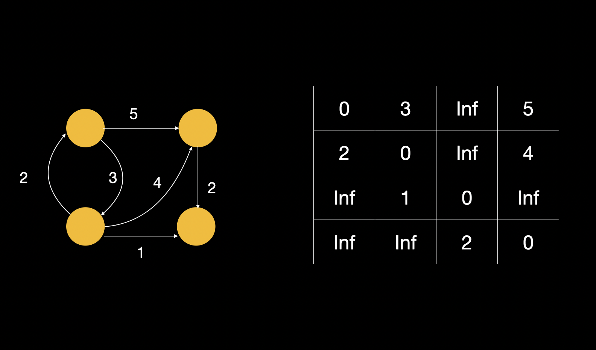
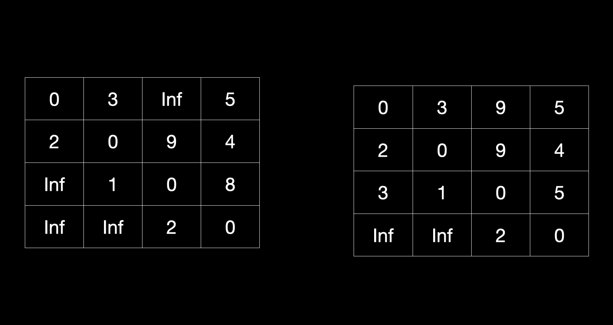
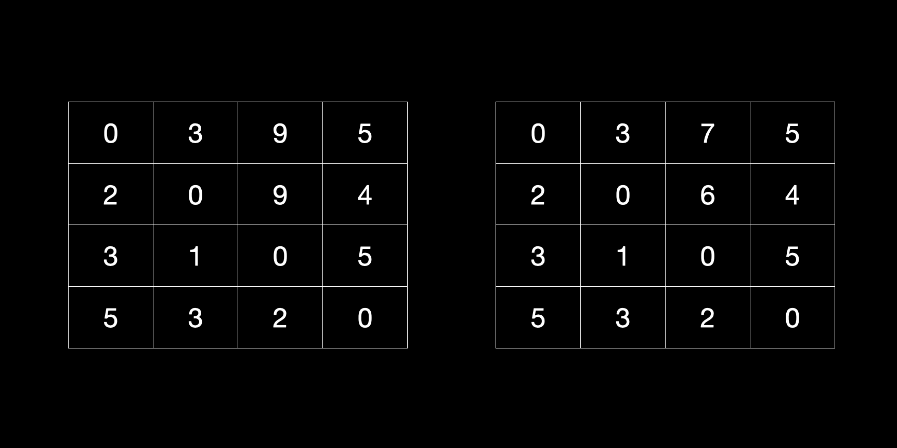

Floyd Warshall
-
Problem
Given a weighted ,directed or undirected graph, find shortest paths for each vertex pair. This problem is also known as All Pairs Shortest Path Problem. It works on the principle of dynamic programming. -
Solution
Assume that a graph has `n` vertices and the matrix of distances be `M`.The basic idea of the algorithm is that before `k^(th)` iteration, `M[i][j]` is the shortest path from vertex `i` to vertex `j` . One restriction is that the path can contain only vertices 1,2,3…,k-1 as the intermediate vertices.
-
How is the solution actually implemented?
- Create a 2d array `M` with `n+1` rows and `n+1` columns. (We take `n+1` to facilitate one-based indexing).
- Initialise `M` such that `M[i][j]`= weight of edge between `i` and `j` if it exists otherwise `M[i][j]`=infinity. All the diagonal entries of `M` should be `0`.
-
Now for iterations from `k=1` to `k=n` , in each iteration there are two different possibilities:
- The shortest path from `i` to `j` with vertices `1,2,..,k-1` is same as the shortest path from `i` to `j` with vertices `1,2,…,k`. In this case , we do not need to change `M[i][j]`.
-
The shortest path from `i` to `j` with internal vertices `1,2,..,k-1` is longer than the shortest path from `i` to `j` with vertices `1,2,…,k`. In this case , we update `M[i][j]`.
This case means that a new shortest path passes through `k` as an intermediate vertex. This path can be broken into two cases : path from `i` to `k` and path from `k` to `j`. Both `M[i][k]` and `M[k][j]` have been computed in previous iterations as these paths contains only vertices from 1 to k-1 as intermediate vertices.
Representing the above situation as a formula, we can write,
`M[i][j]=min(M[i][j] , M[i][k]+M[k][j])`
Hence , in each iteration all we have to do is to iterate through the matrix and update the cells using the above formula. After n iterations , we will get a matrix in which `M[i][j]` will represent the length of shortest path from `i` to `j` . If `M[i][j]` is infinity , that means no path exists from vertex `i` to vertex `j`.
-
Example:
Graph and initialised matrix

On left is matrix after one complete matrix traversal and on right is matrix after second complete matrix traversal 
On left is matrix after third complete matrix traversal and on right is matrix after fourth complete matrix traversal 
-
//Initialise the matrix according to the graph for (int k = 0; k < n; ++k) { for (int i = 0; i < n; ++i) { for (int j = 0; j < n; ++j) { M[i][j] = min(M[i][j], M[i][k] + M[k][j]); } } } - Time complexity - `O(n^3)`
-
Where does the algorithm fail ?
The graph may have negative weight edges, but no negative weight cycles. If a negative weight cycle is present, the algorithm will keep traversing the negative cycle in order to make the cost smaller and smaller. This will lead to shortest path being undefined.